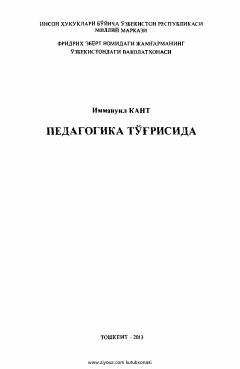

PTBuyuk faylasuf Immanuil Kantning tarbiya va pedagogik qarashlari bayon etilgan asar.
Ushbu asar buyuk nemis faylasufi Immanuil Kantning tarbiya nazariyasi va usullariga bag'ishlangan muhim pedagogik mehnatidir. Kitobda insonni mustaqil fikrlashga o'rgatish, axloqiy tarbiya va ta'lim jarayonida erkinlik hamda majburiyat uyg'unligi masalalari tahlil qilinadi.